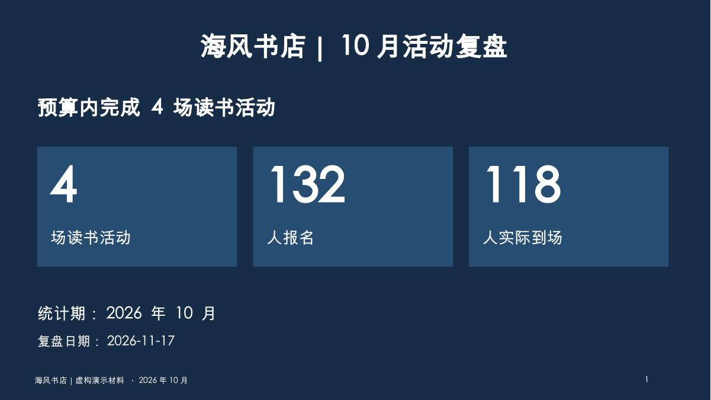
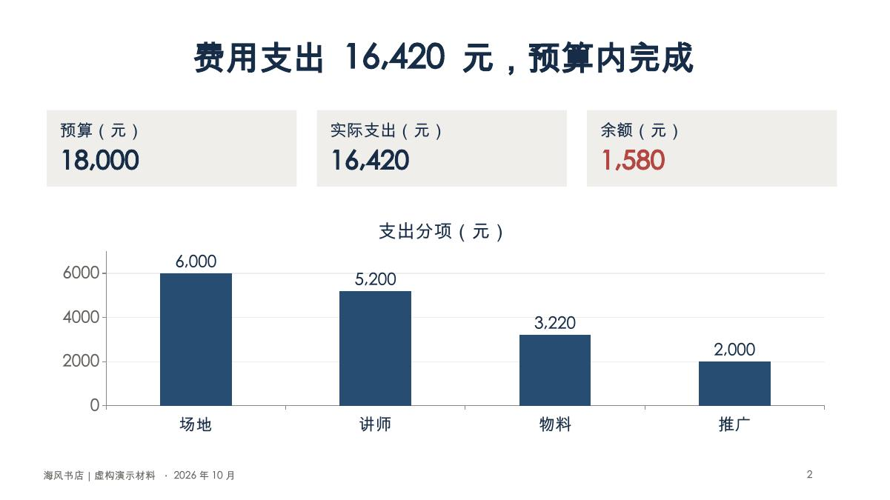
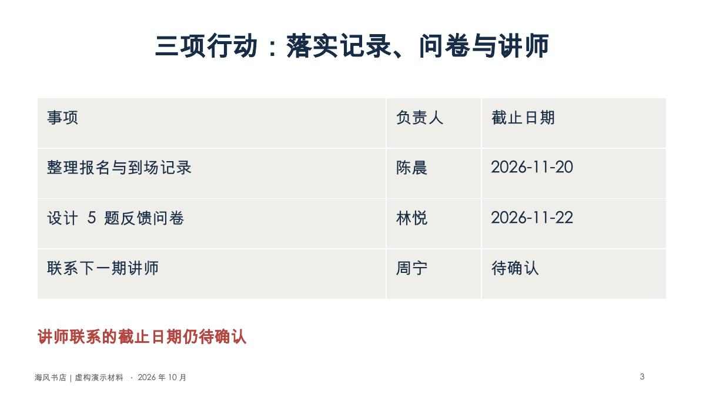
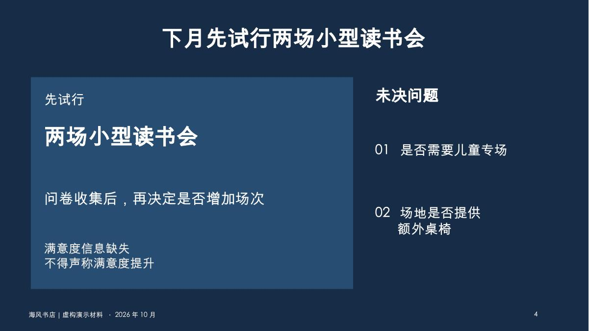

← 返回 Skill 详情semifly · 本地真实运行记录 · 2026-11-17 · 虚构测试材料
4 页复盘：原生图表、行动表与讲稿
修正并渲染后通过实际安装 pptx Skill，Agent 使用 PptxGenJS 生成 16:9 演示文稿。运行中修正占位符写法并配置中文字体，重新生成后通过原验证器与逐页渲染检查。
- 4 页幻灯片，每页都有备注讲稿
- 1 张原生柱状图、1 张原生表格、1 个内嵌数据工作簿
- 无整页栅格图片；金额、负责人和待确认日期均与输入一致
可编辑性依据 OOXML 原生对象结构检查，未在 Microsoft PowerPoint 中交互编辑。仅测试这份 4 页虚构材料。
真实生成文件经 LibreOffice 渲染后的预览页截图；不是 Microsoft Office 客户端截图。 CLI 默认模型；未记录确切服务端模型 ID，未取得金额账单，未验证 OneAPI 模型组合。

实际产物 · 1 / 4
实际产物 · 2 / 4
实际产物 · 3 / 4
实际产物 · 4 / 4